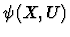
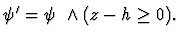
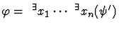
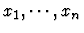
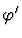
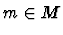

By Sylvester's criterion semidefinite constraints are reduced to a conjunction of inequalities and the SDP problems are reduced to the ordinary nonlinear programming problems.
In [21] Weispfenning showed that the optimization problem, in particular linear programming problems, can be solved successfully by using his highly improved QE algorithm. We utilize his algorithm for a nonlinear programming problem derived from the SDP problem as above. This explains how we solve the SDP problems by using QE.
Here we show the brief sketch of his method to solve optimization problems given by a Boolean system

consisting of equations and inequalities and an objective function h(X,U); First introduce a new indeterminate z assigned to the object function h. Consider the new Boolean system
Then the problem minimizing h subject to is formulated as first-order formula
. Next eliminate all quantified variables
to have the resulting qf formula
in z and U. After that we specialize parameters U of by an appropriate real values, then gives a finite union M of intervals for z, which shows a possible range of z. If M is empty,
is a lowest endpoint of M, then m is the minimum value of z w.r.t.